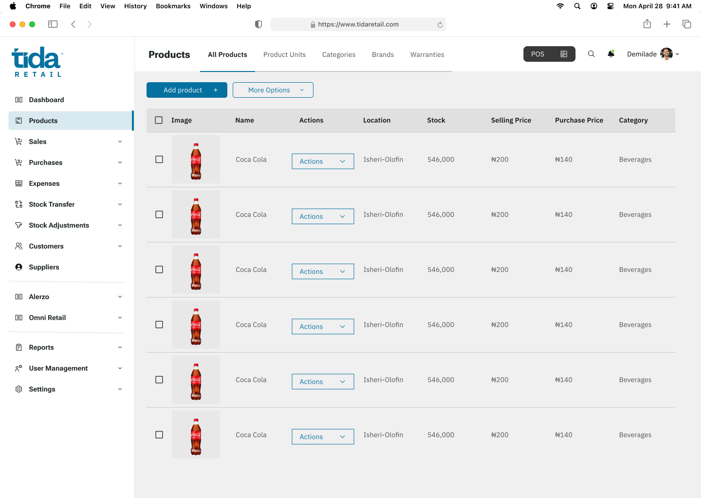
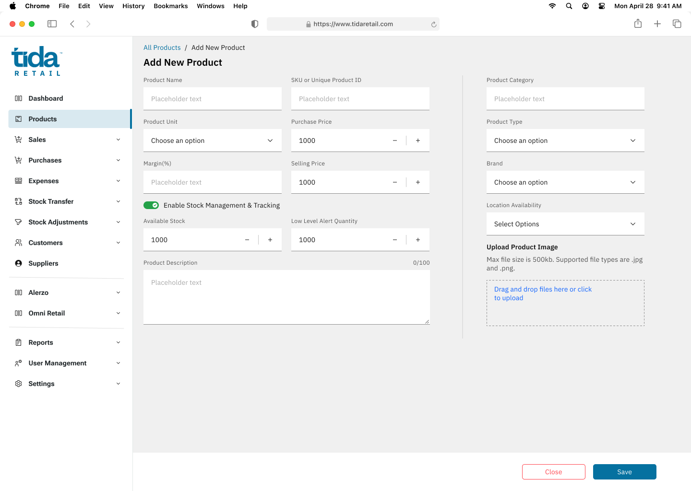
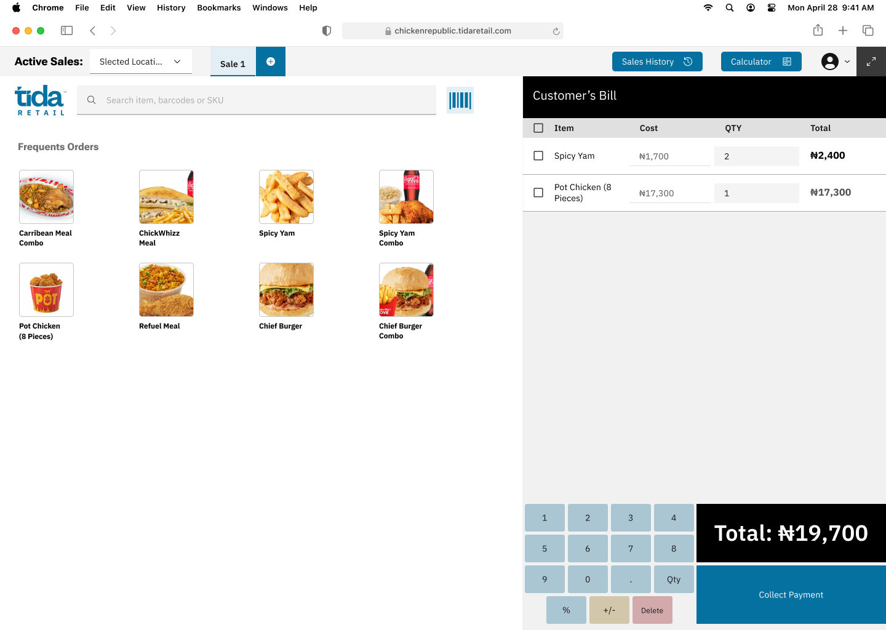
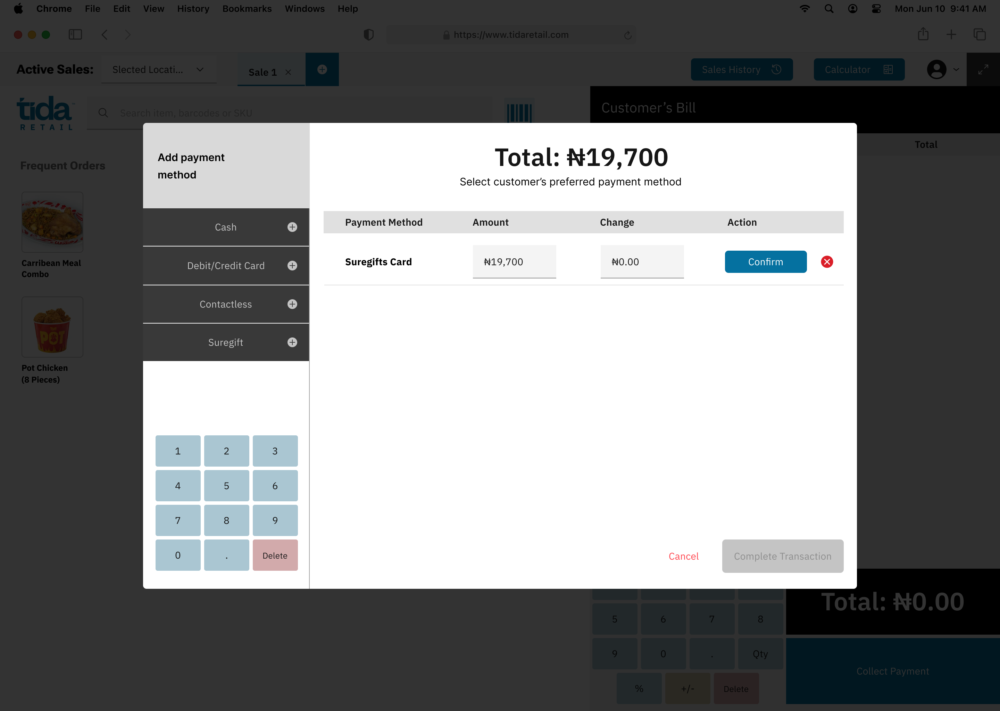

Tida Retail — the sale and the payment were never the same event.
A design lead's account of unifying two disconnected systems of record inside Nigerian retail — without asking a single merchant to change how they work.
Everyone framed this as a payments problem. It wasn't. It was a trust problem — the store owner didn't trust their own numbers, and we weren't going to earn that trust by asking them to change how they run their shop.
In Nigerian retail, a sale and a payment are two disconnected events, run on two disconnected systems, reconciled by a human being at the end of a long shift. Three pieces of infrastructure sit between a customer and a recorded sale — and none of them talk to each other.
Manual reconciliation isn't just slow — it's a silent tax on the business. Every mismatch is either a loss no one notices, or an hour spent chasing a number that should never have needed chasing.

Rather than start from what a POS system could do, I started from the shift itself — sitting with cashiers through open and close, and separately interviewing the owners who'd have to trust the numbers it produced.
The two groups wanted almost opposite things — cashiers wanted the reconciliation pain gone; owners wanted proof nothing had been hidden from them. Any solution had to satisfy both at once, or it would be rejected by whichever side lost.
"Cashiers navigate an average of three separate hardware interfaces per transaction — every extra step is another place for a mismatch to be born, and another reason for an owner not to trust their own till."
The insight wasn't "reconciliation is slow." It was that every extra interface in the transaction path was a fresh point of failure — and fixing that meant collapsing interfaces, not adding a dashboard on top of them.
Asking merchants to switch payment providers would have created friction, distrust, and a far longer sales cycle. Every decision below trades a "more correct" architecture for one merchants would actually adopt.
Owning our own payment rails would give full control, but take months we didn't have. Integrating existing providers got real merchants live in weeks.
Rather than custom-code each provider, we designed one integration layer — accepting short-term rigidity for long-term speed onboarding new providers.
Merchants kept their terminal exactly as it was. Tida gave up the chance to "own" the payment moment in exchange for zero behaviour change at the till.
The interface is one action — confirm payment. Behind it, three systems have to agree on the same truth within seconds, offline-first, with no room for a cashier to notice the plumbing.
receives payment confirmation ←
receives transaction status API ←
closing the loop in real time
Cards auto-confirm at the terminal — the till already knows the moment a card payment clears. A bank transfer doesn't. The customer moves money peer-to-peer, and the cashier is left squinting at a phone notification to decide whether to hand over the goods. That gap sits on top of the single largest payment rail in the country.
Source: NIBSS 2024 e-payments data. Bank transfer is not an alternative payment method in Nigerian retail — it is the default one. Confirming it inside TidaOS, without a second device or a second glance at a phone, was the highest-leverage fix available.
Two surfaces, one system of record: a web admin where owners manage inventory with full confidence in the numbers, and a tablet POS where cashiers collect payment across every method a customer might use — cash, card, transfer, or wallet — without leaving the till.




Before scaling nationally, we needed to de-risk the core bet — that closing the interface gap would close the trust gap too. Two pilots, in different retail contexts, tested it.
Two very different stores, the same result: when the interface gap closed, the leakage went to zero and reconciliation dropped from hours to minutes. That consistency, more than either number alone, is what took this from pilot to platform bet.